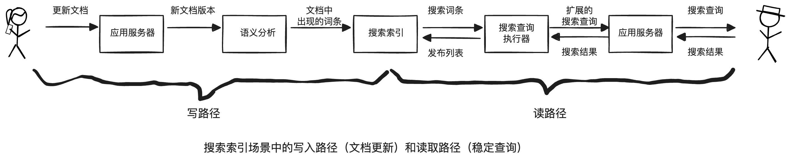

第12章 数据系统的未来
数据集成
派生数据与分布式事务通过不同的方式达到了类似的目标。分布式事务通过锁机制进行互斥来决定写操作的顺序，而CDC和事件源使用日志进行排序。分布式事务使用原子提交来确保更改只生效一次，而基于日志的系统通常基于确定性重试和幂等性。
派生数据允许逐步演变。想重建数据集，无需采用高风险的陡然切换。而是在同一个基础数据上的两个独立视图来同时维护新老两种架构。逐步将少量用户迁移到新视图中，以测试性能检测错误。最后，所有用户迁移完，放弃旧视图。
lambda架构
核心思想是将数据看成一个个不可变的事件，基于这些总事件，派生出读优化的视图。建议运行两套系统：一个批处理，一个流处理。批处理产生精确的全量视图，流处理产生及时的增量视图。
这样结合了两套系统的优点：批处理简单，不易出错，流处理不可靠，难以容错，但流处理可以使用快速的近似算法。
最近的发展是将批处理和流处理在同一个系统中实现，即所谓的kappa架构。
分拆数据库
整个组织的数据流就像一个巨大的数据库。每当批处理、流或ETL将数据从一个位置传输到另一个位置，就类似数据库子系统需要保持索引或实体化视图至最新状态。流处理，批处理就像触发器。没有统一的数据模型或存储格式适用于所有的访问模式，最终会统一为两种途径：
-
联合数据库：统一读端
为各种各样的底层存储引擎和处理方法提供一个统一的查询结构：一种称为联合数据库或聚合存储的方法。
-
分离式数据库：统一写端
跨系统的同步写。
传统的同步写依赖分布式事务，但是具有幂等写入的异步事件日志是一种更健壮的方法。
- 在系统级别，异步事件流使得组件终端或性能下降时表现更稳健。
- 在人员角度，分离式数据系统使得不同的团队可以独立的开发、改进和维护不同的软件和服务，可以更专业的专注于自己的领域。
分离和组合的目的并不是替代传统数据库，而是为了组合不同的系统，结合每个系统的优点去满足自己的需求。
流式处理与服务
前者是单向的，异步的，后者是双向的，同步的。假设客户正在购买一种商品，这种商品以某一种货币定价，但需要另一种货币支付。两种方式的实现：
- 对于微服务，同步查询汇率服务，以获取特定货币的当前汇率。
- 对于数据流，会预先订阅汇率变更流，并在本地数据库记录当前汇率。
但是要注意事件依赖，如果要重演当初的购买行为，汇率必须得是当时的。
写路径与读路径

写路径与读路径涵盖了数据的整个过程。写路径和读路径在派生数据集上交会，某种程度上，它是写入时需完成的工作量与读取时需完成的工作量之间的一种平衡。从这个角度看，缓存、索引和视图主要是调整读写路径之间的边界。
端到端的正确性
强制约束
一致性包含两个方面：
-
时效性
意味着确保用户观察到系统的最新状态。暂时的，最终通过等待和再次尝试来解决。
-
完整性
意味着避免数据损坏，即没有数据丢失，也没有互相矛盾或错误的数据。永久的，需要专门的检查和修理。
宽松的约束
为了性能或可用性通常会采用。
- 如果两个人注册了相同的用户名或预订了同一个座位，则可以向其中一个发送道歉消息。这种纠正错误的措施被称为补偿性事务。
- 如果订购的商品超出库存，可以追加补充库存，但需要为延误发货道歉，并提供折扣。
- 如果有人提款额比他们账户中的钱还多，银行可以向他们收取透支费用。
在许多商业环境中，实际上可以接受的是暂时性违反约束，稍后通过道歉流程来修复，关键是道歉的成本有多高。
信任，但要确认
也就是允许系统出错，但是要及时的发现和修复。
加密工具来证明系统的完整性，比如加密货币、区块链和分布式账本。密码审计和完整性检查常常依赖默克尔树（Merkle Tree）。
检查数据完整性也被称为审计。
做正确的事
技术是工具而不是目的，要用技术造福人类。本节讨论了一些开发问题，比如偏见和歧视、信息孤岛导致的囚笼效应，用户隐私保护等话题。